The idea
Agentic Mirror interviews you, locks what it learned as evidence, writes a document from that evidence, and lets you review and accept it. It runs on your machine against your own model gateway. Nothing is stored anywhere else.
The design constraint that shapes every screen: the application must never assert something its own record does not support. If it says a call was charged, it was charged. If it says nothing moved, nothing moved. If it says your words are held and unsent, they are. Most of the work below is in service of that one rule — and the places where it still breaks are named honestly in what review found.
How these were captured
Deterministic mock mode (AGENTIC_MIRROR_MOCK_MODE=1), a
fresh SQLite database per scenario, Chrome at 1440×900.
Failure states were produced with real fault injection
(AGENTIC_MIRROR_MOCK_FAULT), not staged. No screenshot
was edited, and no application file was changed to make a state
easier to reach.
The journey
First launch through explicitly accepting a finished document. Nine steps, each one telling you what will happen before you commit to it.
Connect your model gateway
One key, one model, one spending cap. No account, no sign-up, no server.
Agentic Mirror needs one gateway key and one model to begin.
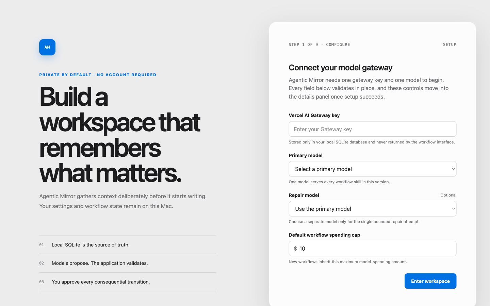
Three durable details, once
Optional calibration. What you answer here persists across every future workflow, which is exactly why it is skippable.
Answer these now, or skip directly to your first outcome.
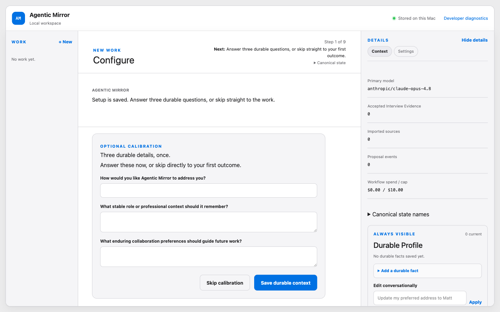
Clarify the goal
You say what you want to make. The application commits to asking one focused question at a time rather than a form.
Setup is saved and now lives in the details panel. Tell me what you want to make and I will ask one focused question at a time.
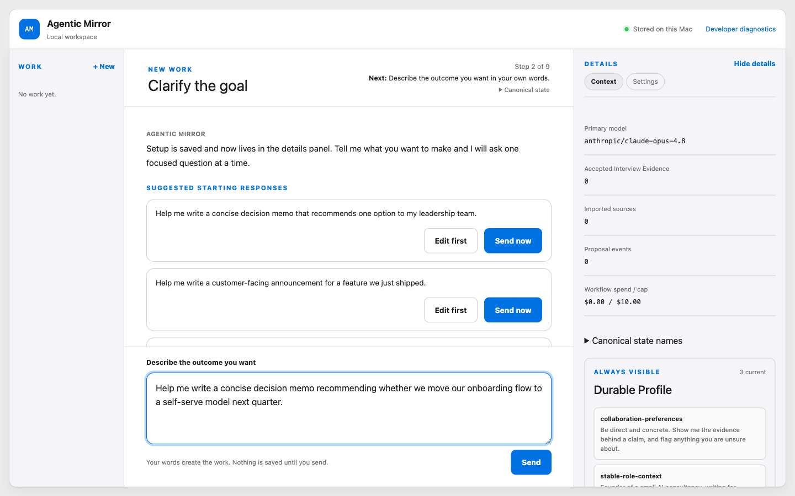
Review the brief
Before the interview begins, the brief it will be run against is shown back to you — along with what continuing does and does not commit.
Continuing starts the interview against this brief. Nothing is written yet, and your answers stay editable until you freeze the evidence.
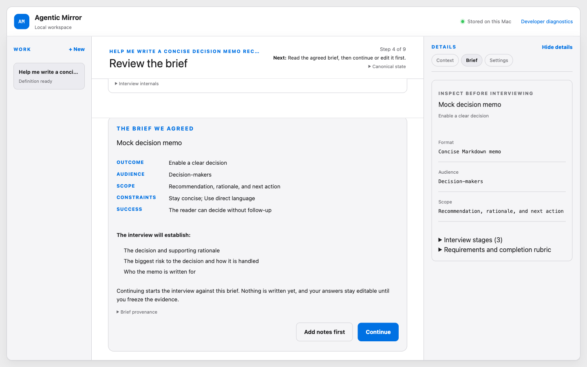
Deepen the thinking
The interview proper. One question, the transcript above it, and a composer that states plainly that nothing is saved until you send.
What is the single biggest risk to this decision?
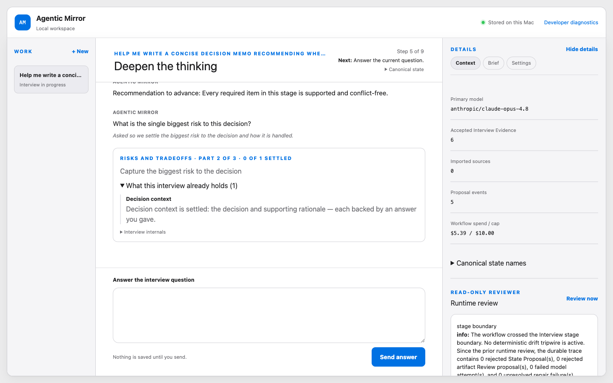
Lock the evidence
The hinge of the whole workflow. Everything after this is written from what is frozen here, so the card separates what locks from what stays open.
Finishing locks the evidence below as the basis for your draft. Staying here keeps adding to it instead.
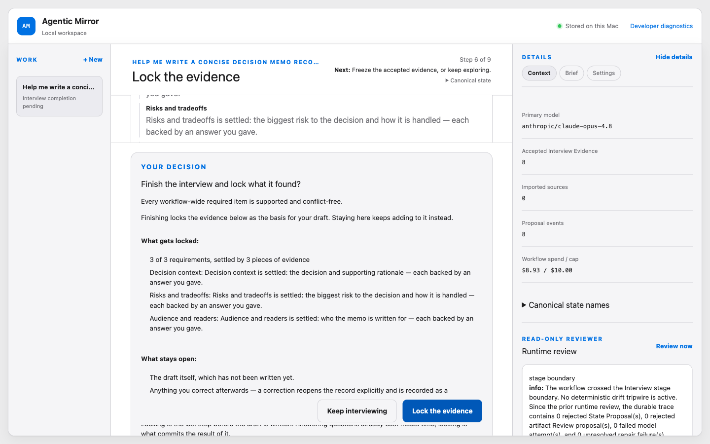
The draft exists
Version 1 is saved beside the conversation, not inside it. Review is a separate model pass and it does not start on its own.
Review has not started and will not start on its own. It is a separate model pass that reads this version and proposes changes you approve one at a time.
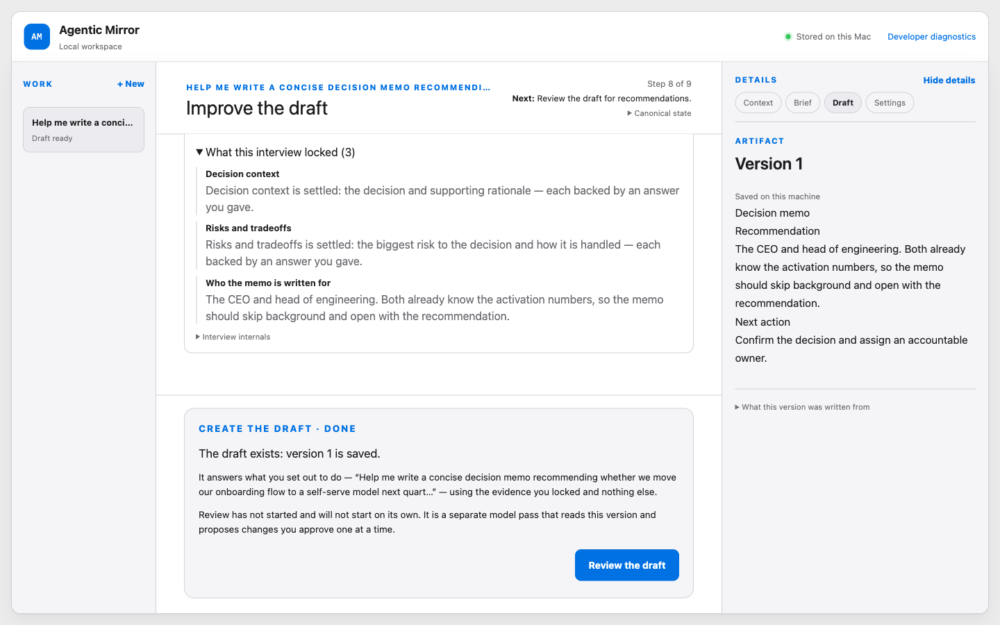
Decide on every recommendation
Critical, Important, Optional — each with the stake spelled out, a note field, and a counter. Nothing is rewritten until you have decided all of them and asked for the rewrite yourself.
Review read version 1 and proposes 3 changes.
Nothing is rewritten until you decide on every one of them and ask for the rewrite yourself.
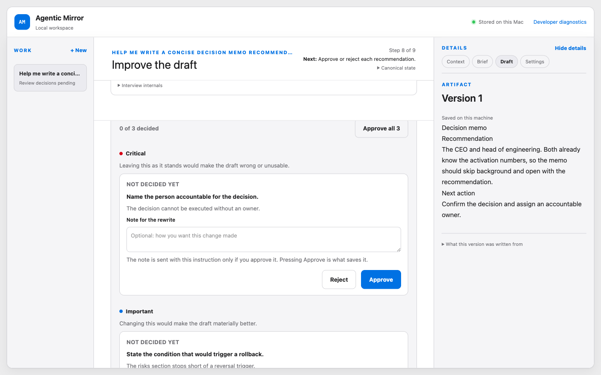
See exactly what will be sent
Before the rewrite runs, the application restates what goes to the model and what is dropped — including the notes you attached.
Rewrite version 1 with the 2 changes you approved.
The one recommendation you rejected is dropped, along with any note on it.
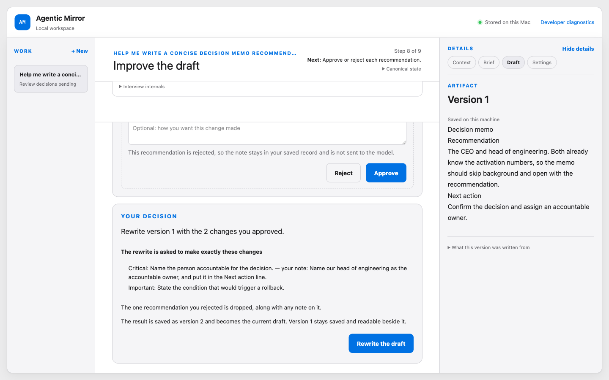
Accept and finish
Acceptance is framed as your act, not the model's verdict. Earlier versions stay readable.
Version 2 is the finished result.
… nothing here runs again on its own.
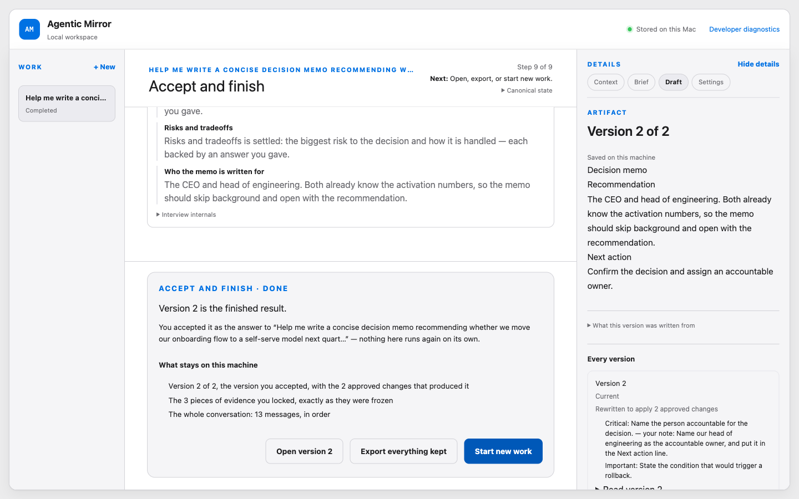
When things go wrong
The failure states are where this application earns its keep. Each one was produced by real fault injection against a fresh database.
The spending cap stops a call
It states the estimate, the spend so far, the projection, and what is being held — then offers four differentiated exits.
This call would take the workflow past its spending cap.
Writing the draft is estimated at $1.55. This workflow has spent $8.93 of its $10.00 cap, so running it would reach about $10.48. That is why it stopped instead.
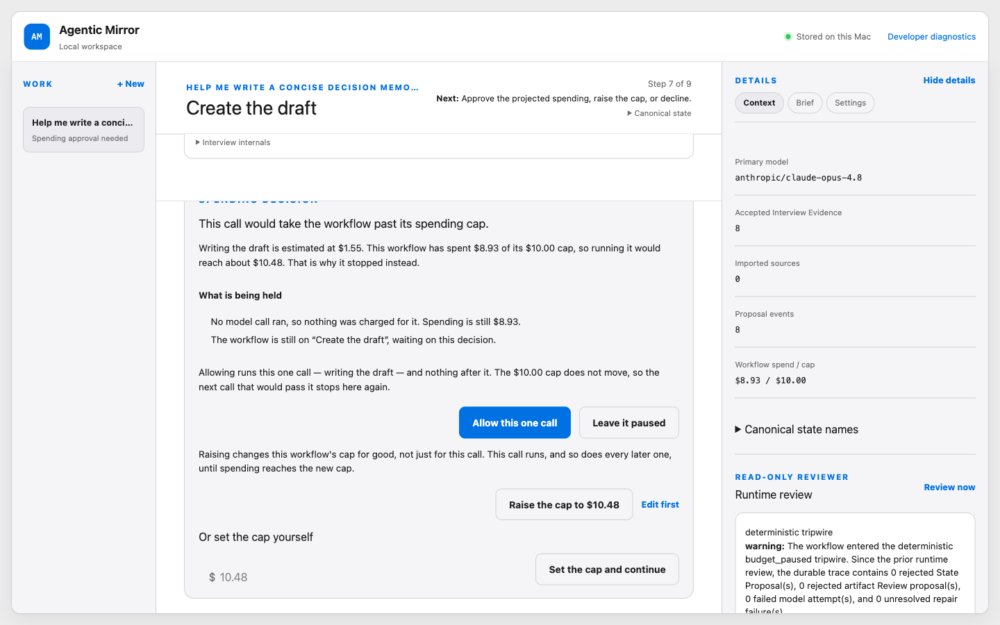
A retry is not progress
The transport dropped and the call is being retried. The notice exists specifically so a retry cannot be mistaken for a step forward. It is on screen for about a second.
The connection dropped. Trying again — attempt 2.
This is a retry, not progress. Nothing has been saved and your workflow has not moved on.
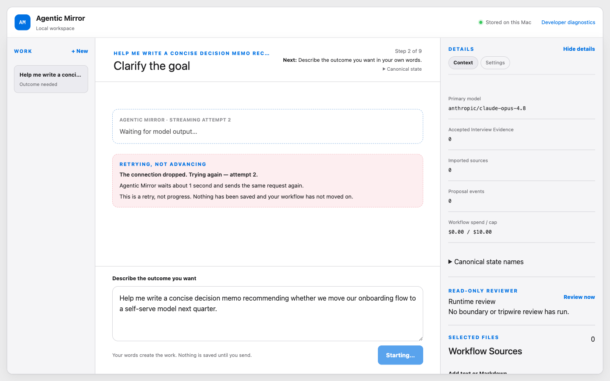
A model answer is rejected
The model returned something that failed validation and could not be repaired without changing its meaning. The application refuses to do that on your behalf.
That answer came back unusable, so I rejected it. Nothing was saved.
It could only be salvaged by changing what it said, and putting words in your record is not mine to do.
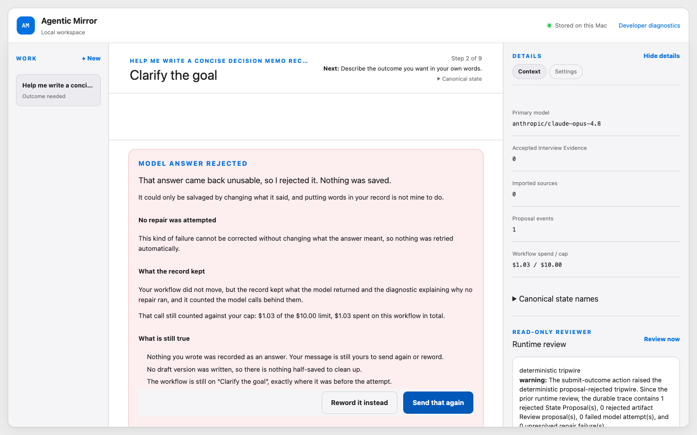
Correcting what it understood
When the application has recorded something wrong about your situation, the correction is previewed in full before it applies — what changes, what does not, and which saved drafts go stale.
Change what this workflow reads as who the memo is written for?
Nothing below has happened yet. This is what would follow if you applied it.
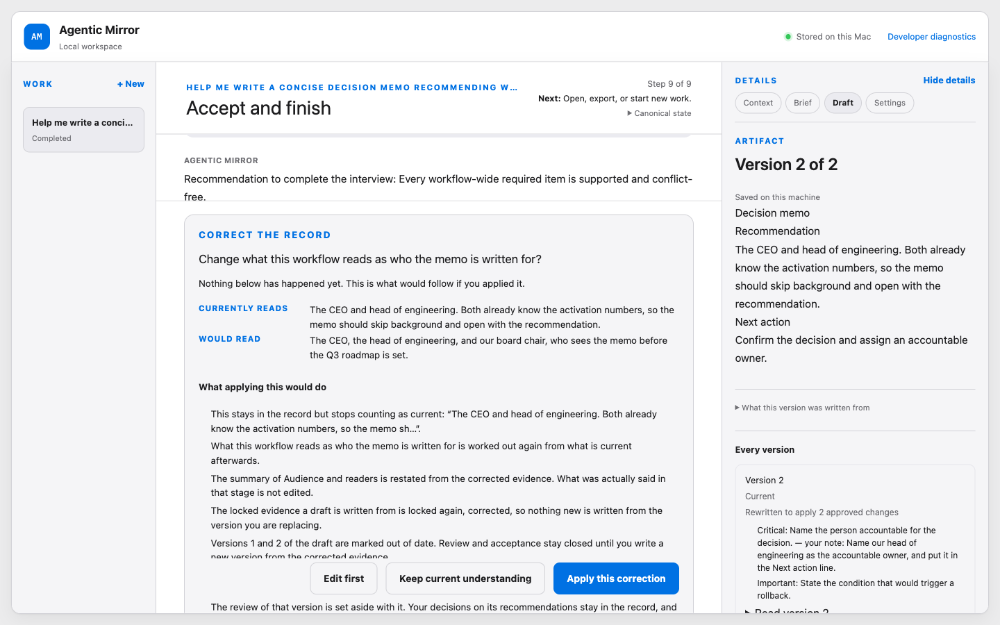
Recovery points
A verified recovery point is written after every successful change. Restoring one is deliberate: inspect, read the consequence, confirm.
Restore the recovery point from 2 minutes ago?
Nothing is restored automatically. You choose a point, read what it would replace, and confirm before anything changes.
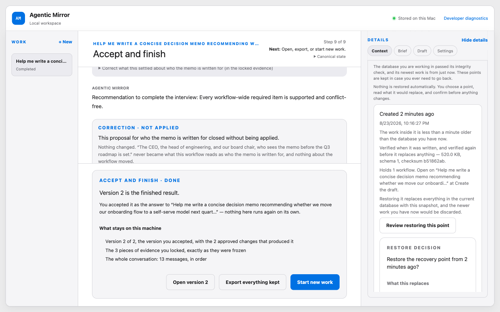
The database is gone
The primary database was moved out from under a running install. The application says so plainly, and still restores nothing without being told.
The database you were working in is not where it should be.
Agentic Mirror could not find the primary database where it expects it, and it is holding 5 verified recovery points. Nothing has been restored for you.
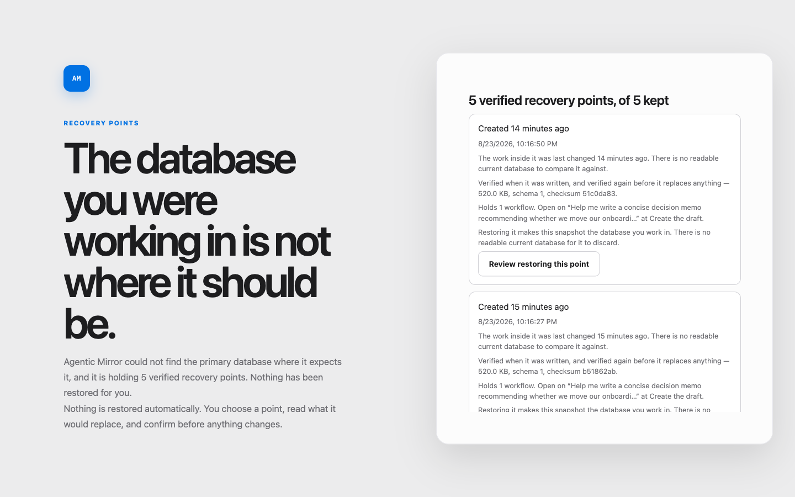
What review found
Three independent reviewers walked the running application with no access to its source: one on the primary journey, one on the failure branches, one on keyboard and screen-reader behaviour. These are their open findings, unedited in substance. They are not yet fixed.
Found by more than one reviewer
Version 2 is byte-identical to version 1 while the interface claims a rewrite. The version card reads “Rewritten to apply 2 approved changes” and the completion screen repeats it, but the document text is unchanged — the approved changes appear nowhere. This is a mock-adapter limitation, but the claim is application copy, not model output, and it breaks the one rule the whole design rests on. It is the highest-priority fix outstanding.
Also open
- Focus is dropped to the page body after nearly every transition. The spending-cap card already does this correctly; the rest do not, so keyboard users re-tab from the top at each of the nine steps.
- Successful retries charge triple with no disclosure. When retries end in failure the card accounts for every attempt exactly; when they succeed, the extra charge is silent.
- The repair-model default disables repair. The setup copy implies repair runs by default; it does not until a separate model is chosen.
- Setup validation flags the wrong field, misses the empty required one, and leaves stale errors on screen after they are fixed.
- At 200% zoom the centre pane collapses and is painted over by the details panel.
- The transcript is crushed to a thin band whenever a decision card is docked — visible in step 05 above — at exactly the moments the interface asks you to verify against your own words.
- Long decision cards open scrolled past their own headline, as in the spending-cap capture above.
Reported, then disproved
One reviewer reported that the Enter key was swallowed
application-wide, making every link keyboard-inoperable — a
critical finding if true. It is not: the source contains no key
handler and no event listener of any kind, and every
preventDefault is an ordinary form submit handler. It
was an artifact of synthetic key events in the automation harness.
It is being re-verified with real key input before it is closed.
What the reviewers agreed works
- The failure cards. Every fault mode produced a truthful, specific card with exact charge accounting, honest diagnostics, and a working way forward. Typed words survived every failure.
- The spending-cap pause, independently singled out by all three.
- The review-decision model: tiered recommendations, one-line stakes, a decided counter, and a pre-rewrite summary that restates exactly what will be sent.
- Consequence-before-commitment copy throughout — and, apart from the rewrite claim above, it came true every time it was checked.
- Restart durability: kill the server mid-journey and you land back where you were, with the right next action.
These are explicitly out of scope for the visual refinement pass.
Status
| Ticket | Scope | State |
|---|---|---|
| 01–05 | Entry, brief approval, evidence locking, durable draft, accept and revisit | Merged |
| 06 | Correct context with visible consequences | Merged |
| 07 | Pause and resume spending decisions | Merged |
| 08 | Recover invalid and interrupted model work | Merged |
| 09 | Restore canonical state without losing newer work | Merged |
| 10 | Validate and refine the complete desktop experience | In progress |
Each ticket was implemented test-first, reviewed adversarially, and its accepted findings fixed before merge. The integrated branch passes 491 of 492 tests; the single failure is an unrelated test that hard-codes a port already held on the capture machine. Type-checking, linting, and the production build are clean.
Remaining on ticket 10: fix the findings above, apply restrained visual refinement, and run the whole deterministic journey once more.